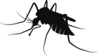
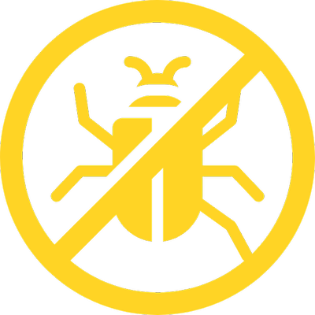

Casas · condominios · residenciales
Fumigación de casas y condominios en Guatemala
Si estás viendo cucarachas de día, encontraste rastros de roedores en la cocina o los zancudos no te dejan descansar, es momento de actuar antes de que la plaga crezca. Controlamos plagas en casas y condominios con productos de efecto residual y un proceso claro para cuidar a tu familia y a tus mascotas.
Solo necesitamos los metros aproximados y cuántos niveles tiene tu casa. Te cotizamos sin visita previa.
- Cotización sin visita previa
- Atención en 24 horas o menos
- Productos de efecto residual

¿Cuándo es momento de fumigar tu casa?
Una plaga rara vez aparece de la nada. Entre antes se trate, más simple es el control.
- Ves cucarachas durante el día (normalmente son nocturnas).
- Encuentras excremento de roedores en la cocina o la bodega.
- Hay filas de hormigas en la cocina o el baño.
- Te pican los zancudos dentro de la casa.
Plagas que controlamos en casas
Toca la tuya y te llevamos a la cotización con el dato ya marcado.
-
Cucarachas y rastreros
La plaga más común en los hogares. Combinamos aspersión, nebulización y gel: la cucaracha lleva el gel a la colonia y el efecto se extiende al resto.
Cotizar -

Hormigas
Tratamiento dirigido a sus rutas y puntos de entrada en cocina, baños y jardín.
Cotizar -

Moscas y zancudos
Además de la aplicación general, usamos termonebulización: un humo que lleva el producto a techos y vigas, adonde no se llega de otra forma.
Cotizar -
Roedores (ratas y ratones)
Control con cebos y estaciones colocadas en los puntos de paso. Además del daño material, los roedores son un riesgo sanitario.
Cotizar
Del formulario a tu casa en cuatro pasos
Cotizas sin visita previa y recibes indicaciones claras antes del servicio.
-
Cotización rápida
Llenas el formulario con los metros aproximados, los niveles de tu casa y la plaga principal. Te enviamos la cotización sin necesidad de visita.
-
Agendamos
Normalmente atendemos en 24 horas o menos. De lunes a jueves hay más disponibilidad.
-
Servicio
Un técnico trata el interior y el exterior en 1 a 3 horas, según el tamaño de la casa.
-
Resultados
Con productos de efecto residual, las cucarachas se controlan en 1 a 3 días y los roedores en unas 48 horas.

Antes del servicioSeguridad para tu familia y tus mascotas
Te damos instrucciones claras antes de cada aplicación.
Utensilios y aparatos
No necesitas sacarlos ni taparlos: la nebulización no moja ni contamina las superficies.
Personas
Desalojan el área durante el servicio y esperan 1 hora antes de volver a entrar.
Perros y otras mascotas
Deben estar fuera de 2 horas hasta un día completo, porque el producto queda en el suelo.
Peces o acuario
Avísanos al cotizar para que el técnico evalúe el área antes del servicio.
Personas sensibles
Si alguien en casa tiene una condición respiratoria, coméntalo al cotizar: lo evaluamos antes de programar.
¿Cuánto cuesta fumigar una casa?
El precio depende del tamaño de la casa, cuántos niveles tiene y el tipo de plaga. Con esos datos te damos una cotización clara antes de agendar, sin visita previa y sin compromiso.
Cotizar mi casaFumigación para condominios
En un condominio las cucarachas y los roedores se mueven entre casas y áreas comunes, así que tratar una sola unidad rara vez resuelve el problema. Trabajamos con administradores y juntas directivas para controlar las áreas comunes —pasillos, ascensores, ductos, parqueos y basureros— y cotizamos aparte las casas o apartamentos que quieran sumarse.
Cotizar para mi condominioPreguntas sobre fumigación de casas
¿Tu duda no está aquí? Escríbela en el formulario y te la contestamos al llamarte.
¿Tengo que salir de mi casa durante la fumigación?
Sí, durante el servicio el área debe estar desocupada. Las personas pueden volver 1 hora después.
¿Es seguro para mis mascotas?
Los perros y otras mascotas deben estar fuera de 2 horas hasta un día completo, porque el producto queda en el suelo. Te damos las indicaciones exactas antes del servicio.
¿En cuánto tiempo veo resultados?
Las cucarachas se controlan en 1 a 3 días y los roedores en unas 48 horas, porque usamos productos de efecto residual. Es normal ver algunas muertas en ese tiempo: significa que el producto está funcionando.
¿Fumigan termitas o chinches?
No son parte de nuestra especialidad. En casas nos enfocamos en cucarachas, hormigas, moscas, zancudos y roedores.
¿Cómo cotizo?
Completa el formulario de cotización con los metros aproximados y los niveles de tu casa. Si prefieres, llámanos al 2307-4727.
¿Buscas control de plagas para tu negocio, bodega o planta?
Ver programas para empresasCotiza la fumigación de tu casa
- Metros aproximados y niveles de tu casa
- Cotización sin visita previa
- Te respondemos por WhatsApp o teléfono
¿Prefieres llamar? 2307-4727